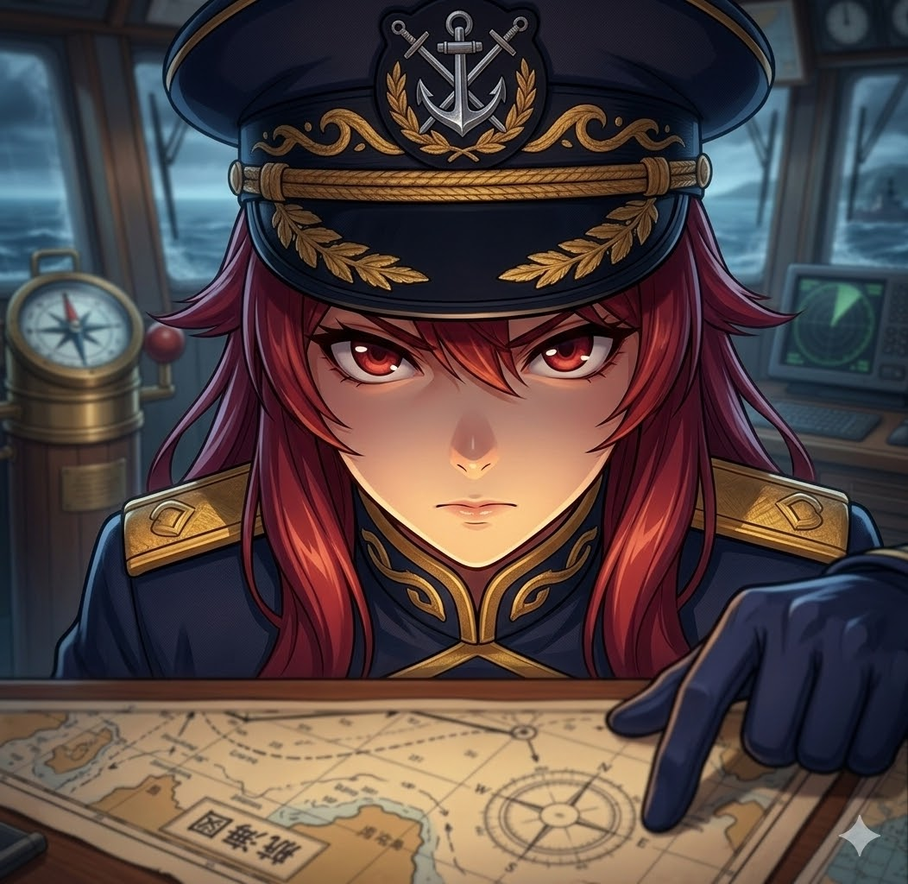
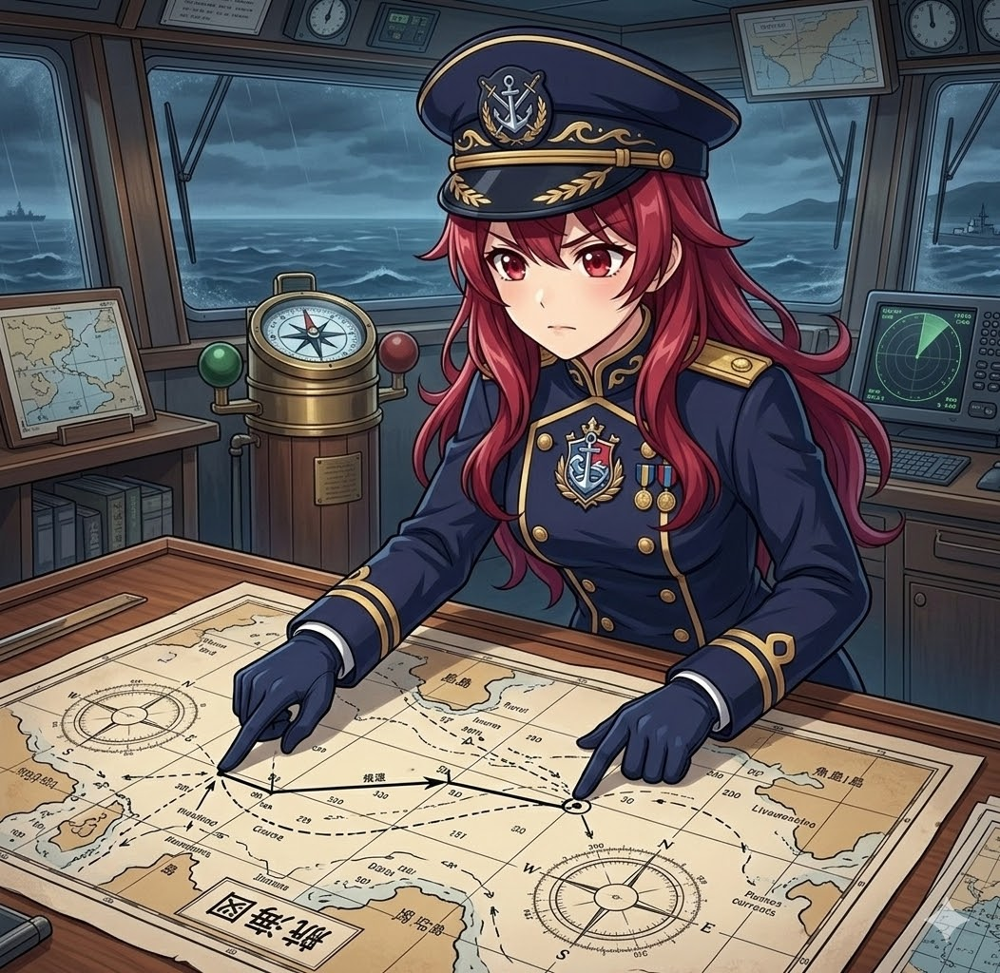
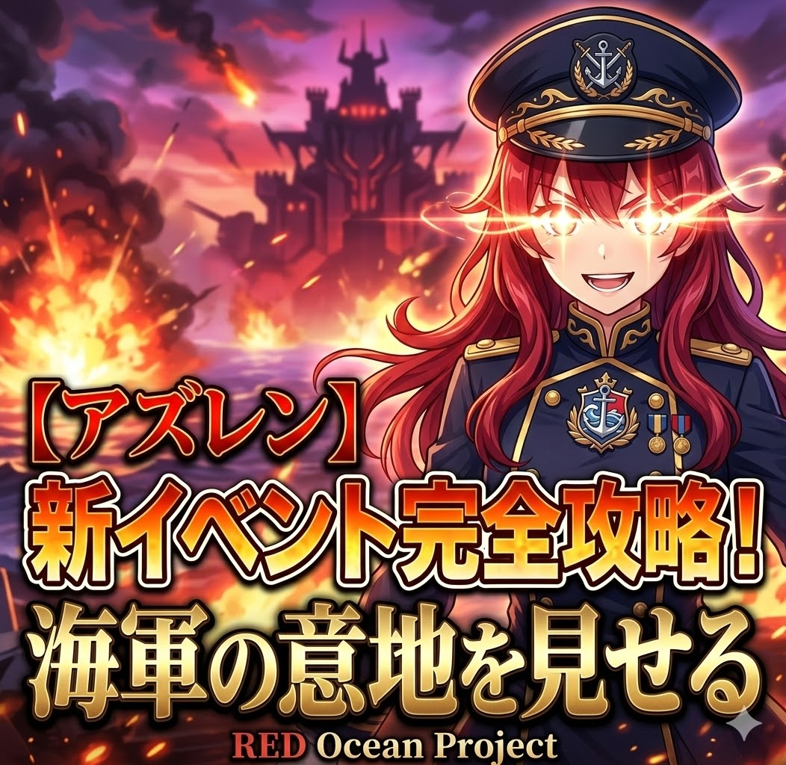
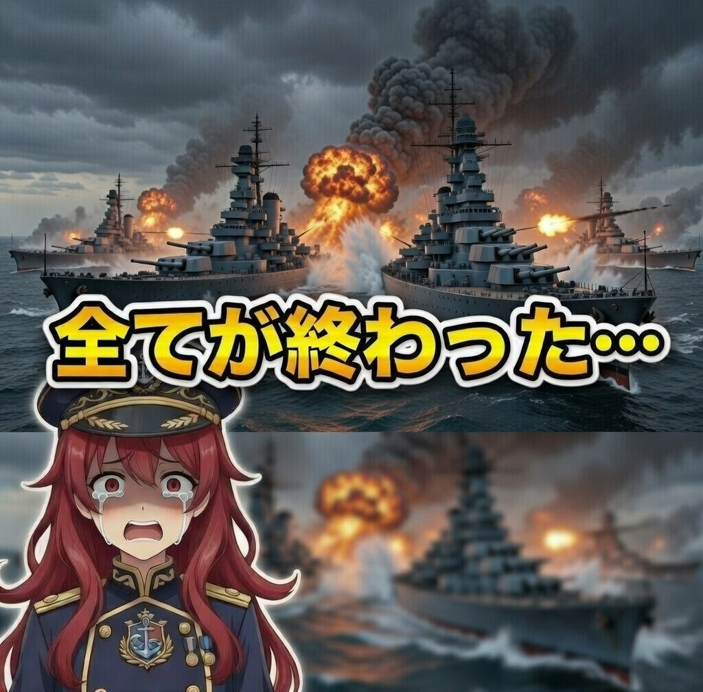

＋ 🔔 

夕陽ヶ丘 艦子
@Yuhigaoka_KankO ・ チャンネル登録者数 11.2万人 ・ 120本の動画
過去のライブ配信
15万回視聴 ・ 3時間前

8.2万回視聴 ・ 昨日

20万回視聴 ・ 2日前
5.4万回視聴 ・ 3日前

32万回視聴 ・ 1週間前
注目のチャンネル

餌木あかり
16.8万人 subs

社地オルカ
45.0万人 subs

碧海みなと
27.4万人 subs

Catherine Wood
13.0万人 subs

純情寺あま
30.1万人
アップロード動画
（最新の投稿順にすべての動画が表示されます）
15万回視聴
Shorts

1.2万回視聴

5,000回視聴

8,900回視聴
過去のライブ配信
15万回視聴 ・ 3時間前
8.2万回視聴 ・ 昨日
作成した再生リスト


コミュニティ投稿
夕陽ヶ丘 艦子 12時間前
提督の諸君！今日の夜は大型建造チャレンジだ！資材の準備はいいか？
21:00から作戦開始する！遅れるなよ！⚓
夕陽ヶ丘 艦子 3日前
昨日の深海調査配信、みんなありがとう！あの沈没船、一体何だったんだろうな…また調査しに行くぞ！